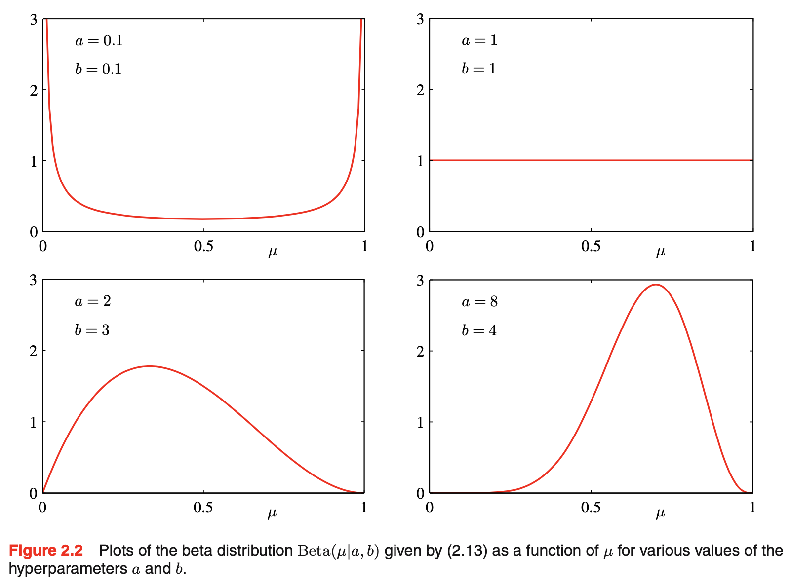
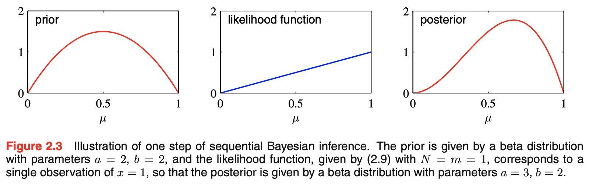
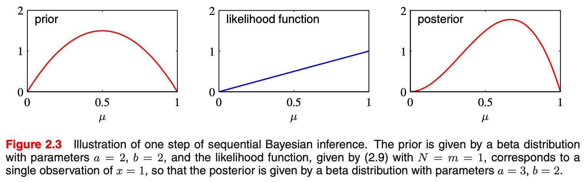
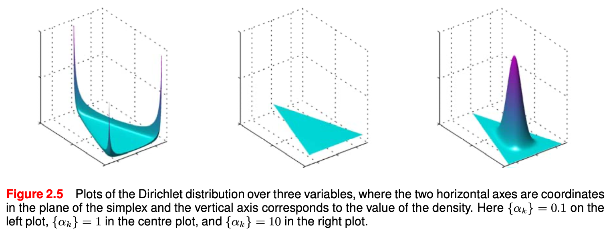

[PRML]2.Probability Distributions
本章介绍一些常见的概率分布，同时也会穿插一些在贝叶斯推断中非常重要的统计学概念。
一个常见的问题是密度估计（density estimation）：给定一个观察到的数据集 \(\mathbf x_1,\ldots,\mathbf x_N\)（假设独立同分布），为随机变量 \(\mathbf x\) 的概率分布 \(p(\mathbf x)\) 建模。值得注意的是，这个问题是 ill-posed 的——存在无数种概率分布都能得到这一数据集。事实上，只要在 \(\mathbf x_1,\ldots,\mathbf x_N\) 处概率不为零即可。
密度估计方法可分为参数估计和非参估计。参数估计指用于建模的概率分布具有特定的形式并由一套参数决定，比如二项分布、多项分布和高斯分布等。用它们来做密度估计，其实就是找到对应参数的合适的值。例如，频率学派常常采用极大似然法，贝叶斯学派则先为这些参数指定一个先验分布，然后用贝叶斯定理计算后验分布。
这里引入一个重要的概念——共轭先验（conjugate priors），即先验分布与后验分布具有相同的形式，这会对大大简化贝叶斯的分析过程。例如，多项分布的共轭先验是 Dirichlet 分布，一个高斯分布的均值的共轭先验是另一个高斯分布。这些分布都属于指数族，具有一些重要的性质。
与参数估计相反，非参估计并不假设分布的某种具体形式，而是与数据集大小有关。这些模型仍然具有参数，但参数是为了控制模型的复杂度而非分布的形式。典型的方法有最近邻、核密度估计等。
Binary Variables
考虑一个二值随机变量 \(x\in\{0,1\}\)，例如抛硬币是否为正面朝上，其分布由一个参数 \(\mu\) 决定：\(x=1\) 的概率为 \(\mu\)，\(x=0\) 的概率为 \(1-\mu\)，即： \[ \text{Bern}(x\vert \mu)=\mu^x(1-\mu)^{1-x} \] 这被称作 Bernoulli 分布。容易得到其均值和方差分别为： \[ \begin{align} \mathbb E[x]&=\mu\\\text{var}[x]&=\mu(1-\mu) \end{align} \] 设有一个独立同分布的数据集 \(\mathcal D=\{x_1,\ldots,x_N\}\)，那么似然为： \[ p(\mathcal D\vert\mu)=\prod_{n=1}^N\mu^{x_n}(1-\mu)^{1-x_n} \] 对数似然为： \[ \ln p(\mathcal D\vert\mu)=\sum_{n=1}^N\left(x_n\ln\mu+(1-x_n)\ln(1-\mu)\right) \] 值得注意的是，计算这个对数似然其实只需要知道 \(\sum_nx_n\)，并不需要知道每一个 \(x_n\)，这就涉及到了充分统计量（sufficient statistic）的概念，我们将在稍后叙述。若采用频率学派的极大似然法，对上式求导取零，解得： \[ \mu_\text{ML}=\frac{1}{N}\sum_{n=1}^N x_n \] 即样本均值。
现在考虑一种情况：抛了 3 次硬币而 3 次都是正面朝上，那么极大似然法会给出 \(\mu_\text{ML}=\frac{1}{3}(1+1+1)=1\) 的解。也就是说，模型会预测未来始终都是正面朝上！常识告诉我们这并不合理，事实上这是一个极大似然法导致过拟合问题的极端例子，稍后我们将看到如何采用贝叶斯方法避免过拟合问题。
假设 \(x=1\)（正面朝上）发生的次数是 \(m\)，则 \(m\) 服从二项分布： \[ \text{Bin}(m\vert N,\mu)=\binom{N}{m}\mu^m(1-\mu)^{N-m} \] 二项分布的均值和方差分别为： \[ \begin{align} \mathbb E[m]&=N\mu\\ \text{var}[m]&=N\mu(1-\mu) \end{align} \]
The beta distribution
上文我们看到，极大似然法容易导致过拟合。那么为了使用贝叶斯方法，我们需要为参数 \(\mu\) 设置一个先验分布。为了方便，我们还希望先验分布与后验分布具有相同的形式。考虑到后验分布正比于似然乘以先验，而似然是 \(\mu^x(1-\mu)^{1-x}\) 的形式，我们自然想到取先验也为 \(\mu\) 和 \((1-\mu)\) 的指数形式。因此，我们选择 beta 分布为先验分布： \[ \text{Beta}(\mu\vert a,b)=\frac{\Gamma(a+b)}{\Gamma(a)\Gamma(b)}\mu^{a-1}(1-\mu)^{b-1} \] 其中 \(\Gamma(x)\) 是 gamma 函数，上式前面的系数保证了 beta 分布的归一性。beta 分布的均值和方差分别是： \[ \begin{align} \mathbb E[\mu]&=\frac{a}{a+b}\\ \text{var}[\mu]&=\frac{ab}{(a+b)^2(a+b+1)} \end{align} \] 参数 \(a,b\) 通常被称作超参数，下图展示了不同 \(a,b\) 下 beta 分布的形状：

为了验证后验分布确实也是 beta 分布的形式，我们先暂时抛开归一化系数： \[ p(\mu\vert m,l,a,b)\propto p(m\vert l,\mu)\cdot p(\mu\vert a,b)\propto \mu^{m+a-1}(1-\mu)^{l+b-1} \] 其中 \(l=N-m\)，即反面朝上的次数。上式已经足以证明后验分布就是 beta 分布，现在只需要参照 beta 分布的形式把归一化系数加上即可： \[ p(\mu\vert m,l,a,b)=\frac{\Gamma(m+a+l+b)}{\Gamma(m+a)\Gamma(l+b)}\mu^{m+a-1}(1-\mu)^{l+b-1}\tag{1}\label{1} \] 对比先验与后验分布，可见当我们观察到数据集中有 \(m\) 次 \(x=1\) 和 \(l\) 次 \(x=0\) 时，对参数分布的影响是给 \(a\) 加上 \(m\)，给 \(b\) 加上 \(l\). 因此，我们可以把超参数 \(a,b\) 理解为 \(x=1\) 和 \(x=0\) 的“有效观察次数”（不一定是整数）。进一步，如果我们观察到了新的数据，那么我们可以把当前的后验分布当作先验分布，继续计算新的后验分布。特别地，如果我们每次只观察到一个数据，那么如果是 \(x=1\)，就给 \(a\) 加 1，否则给 \(b\) 加 1，下图展示了这样的一步更新：

可见，在贝叶斯视角下，这种序列式（sequential）的学习方法是非常自然的。这可以被应用在 real-time learning 之中。
如果要预测下一次试验的结果，那么其实就是要求解 \(p(x\vert\mathcal D)\)，根据贝叶斯方法，我们使用 sum rule 和 predict rule： \[ p(x=1\vert \mathcal D)=\int p(x=1\vert\mu)p(\mu\vert \mathcal D)\mathrm d\mu=\int_0^1\mu p(\mu\vert\mathcal D)\mathrm d\mu=\mathbb E[\mu\vert\mathcal D] \] 即后验分布的均值，其中后验分布由 \(\eqref{1}\) 式给出。根据 beta 分布的均值结论，得到： \[ p(x=1\vert\mathcal D)=\frac{m+a}{m+a+l+b} \] 直观而言，这就是所有观察（包括真观察到的数据集和假设的先验观察）中 \(x=1\) 所占比例。当数据集非常大时，\(m,l\to\infty\)，上式收敛到与极大似然相同的解。事实上这是一个普遍规律：当数据集大小趋向无穷时，贝叶斯方法和极大似然法会趋向一致。（毕竟解决过拟合问题最本质的方案就是加大数据量嘛～）
另外，从图 2.2 中我们看到，随着观察的数据量增加，后验分布变得越来越集中。事实上，这是贝叶斯学习方法的普遍性质。为了说明这一点，考虑一个参数 \(\theta\) 和一个数据集 \(\mathcal D\)，它们构成联合分布 \(p(\theta,\mathcal D)\). 根据重期望公式（law of total expectation）： \[ \mathbb E_\theta[\theta]=\mathbb E_\mathcal D[\mathbb E_\theta[\theta\vert\mathcal D]] \] 这说明，\(\theta\) 的后验均值，在所有数据的平均意义下，等于先验均值。又根据全方差公式（law of total variance）： \[ \text{var}_\theta[\theta]=\mathbb E_\mathcal D[\text{var}_\theta[\theta\vert\mathcal D]]+\text{var}_\mathcal D[\mathbb E_\theta[\theta\vert\mathcal D]]>\mathbb E_\mathcal D[\text{var}_\theta[\theta\vert\mathcal D]] \] 这说明 \(\theta\) 的后验方差，在所有数据的平均意义下，小于先验方差。也就是说，在观察到新的数据后，\(\theta\) 的不确定性（在平均意义下）会变小，分布得更集中。
Multinomial Variables
前一节我们讨论了二值变量，引出 Bernoulli 分布和二项分布，以及二项分布的共轭分布——beta 分布。如果变量不止取两个值，而是 \(K\) 个，那么我们也可以进行类似的讨论。我们可以用一个 \(K\) 维向量 \(\mathbf x\) 来表示随机变量的取值，\(\mathbf x\) 只有一个分量为 1，其余为 0（one-hot），若 \(x_k=1\)，就表示随机变量取值为 \(k\). 设参数 \(\mu_k\) 表示 \(x_k=1\) 的概率，那么： \[ p(\mathbf x\vert\boldsymbol\mu)=\prod_{k=1}^K \mu_k^{x_k} \] 其中 \(\boldsymbol\mu=(\mu_1,\ldots,\mu_k)^\mathrm T\)，且 \(\mu_k\geq 0,\,\sum_k\mu_k=1\).
考虑一个独立同分布的数据集 \(\mathbf x_1,\ldots,\mathbf x_N\)，那么对应的似然函数为： \[ p(\mathcal D\vert\boldsymbol\mu)=\prod_{n=1}^N\prod_{k=1}^K\mu_k^{x_{nk}}=\prod_{k=1}^K\mu_k^{\sum_n x_{nk}}=\prod_{k=1}^K\mu_k^{m_k} \] 其中 \(m_k=\sum_n x_{nk}\) 为所有数据中 \(x_k=1\) 的数量，是该分布的充分统计量。
依旧先考虑极大似然估计，注意这个问题有约束条件，所以拉格朗日函数为： \[ \sum_{k=1}^K m_k\ln \mu_k+\lambda\left(\sum_{k=1}^K\mu_k-1\right) \] 求导取零，解得： \[ \mu_k^{\text{ML}}=\frac{m_k}{N} \] 即所有样本中 \(x_k=1\) 所占比例。
考虑 \(m_1,\ldots,m_K\) 的联合分布，它是二项分布的推广，称作多项分布： \[ \text{Mult}(m_1,m_2,\ldots,m_K\vert \boldsymbol\mu,N)=\binom{N}{m_1m_2\ldots m_K}\prod_{k=1}^K\mu_k^{m_k} \] 注意 \(m_k\) 满足约束 \(\sum_{k} m_k=N\).
The Dirichlet distribution
同第一节一样，我们希望用贝叶斯方法推断参数 \(\boldsymbol\mu\)，且希望先验分布与后验分布具有相同的形式。观察似然函数，它是 \(\mu_k\) 的指数的乘积，所以一个自然的想法就是取先验分布也是 \(\mu_k\) 的指数的乘积形式。或者我们也可以依葫芦画瓢，推广一下 beta 分布。无论如何，先验分布应该是如下形式： \[ p(\boldsymbol\mu\vert\boldsymbol\alpha)\propto \prod_{k=1}^K\mu_k^{\alpha_k-1} \] 加上归一化系数，即得到 Dirichlet 分布： \[ \text{Dir}(\boldsymbol\mu\vert\boldsymbol\alpha)=\frac{\Gamma(\alpha_0)}{\Gamma(\alpha_1)\cdots\Gamma(\alpha_K)}\prod_{k=1}^K\mu_k^{\alpha_k-1} \] 其中 \[ \alpha_0=\sum_{k=1}^K \alpha_k \] 值得注意的是，由于约束条件 \(\sum_k\mu_k=1\) 的存在，所以 Dirichlet 分布的支撑集是 \(K-1\) 阶的单纯形（simplex），即一个有界线性流形，如下图所示：

不同 \(\boldsymbol\alpha\) 下的 Dirichlet 分布示意图如下图所示：

容易验证后验分布确实也是一个 Dirichlet 分布： \[ p(\boldsymbol\mu\vert \mathcal D,\boldsymbol\alpha)\propto p(\mathcal D\vert\boldsymbol\mu)\cdot p(\mu\vert\boldsymbol\alpha)\propto \prod_{k=1}^K\mu_k^{m_k+\alpha_k-1} \] 加上归一化系数： \[ p(\boldsymbol\mu\vert\mathcal D,\boldsymbol\alpha)=\text{Dir}(\boldsymbol\mu\vert\boldsymbol\alpha+\mathbf m)=\frac{\Gamma(\alpha_0+N)}{\Gamma(\alpha_1+m_1)\cdots\Gamma(\alpha_K+m_K)}\prod_{k=1}^K\mu_k^{m_k+\alpha_k-1} \]
The Gaussian Distribution
前两节我们分别讨论了二值变量和多值变量，但它们都是离散变量。这一节我们讨论连续变量，毫无疑问从高斯分布（正态分布）开始。
单变量的高斯分布为： \[ \mathcal N(x\vert\mu,\sigma^2)=\frac{1}{(2\pi\sigma^2)^{1/2}}\exp\left(-\frac{1}{2\sigma^2}(x-\mu)^2\right) \] \(D\) 维随机向量 \(\mathbf x\) 的高斯分布为： \[ \mathcal N(\mathbf x\vert\boldsymbol\mu,\boldsymbol\Sigma)=\frac{1}{(2\pi)^{D/2}}\frac{1}{(\boldsymbol\Sigma)^{1/2}}\exp\left(-\frac{1}{2}(\mathbf x-\boldsymbol\mu)^\mathrm T{\boldsymbol\Sigma}^{-1}(\mathbf x-\boldsymbol\mu)\right) \] 高斯分布可以从多种角度推导出来。例如我们在第一章已经看到了，对于一个随机变量，高斯分布是让它的熵取到最大的分布。对于多元高斯分布也是如此。
另一种推导高斯分布的角度是考虑多个随机变量之和。中心极限定理告诉我们，在一些条件下，随着随机变量的数量增加，它们的和（或均值）趋向于高斯分布。例如，二项随机变量可以视作 \(N\) 个 Bernoulli 随机变量的和，所以随着 \(N\) 增加，二项分布就会趋向于高斯分布。
高斯分布具有很多重要的分析性质，这些性质是以后章节的更复杂的模型的基础，所以务必应掌握。
首先考虑高斯分布的几何形式。从其概率密度函数可以看出，高斯分布以平方的形式依赖于 \(\mathbf x\)： \[ \Delta^2=(\mathbf x-\boldsymbol\mu)^\mathrm T{\boldsymbol\Sigma}^{-1}(\mathbf x-\boldsymbol\mu) \] 这里 \(\Delta\) 被称作 \(\mathbf x\) 与 \(\boldsymbol\mu\) 之间的马氏距离（Mahalanobis distance），当 \(\boldsymbol\Sigma\) 是单位矩阵时，马氏距离退化为欧氏距离。
未完待续。